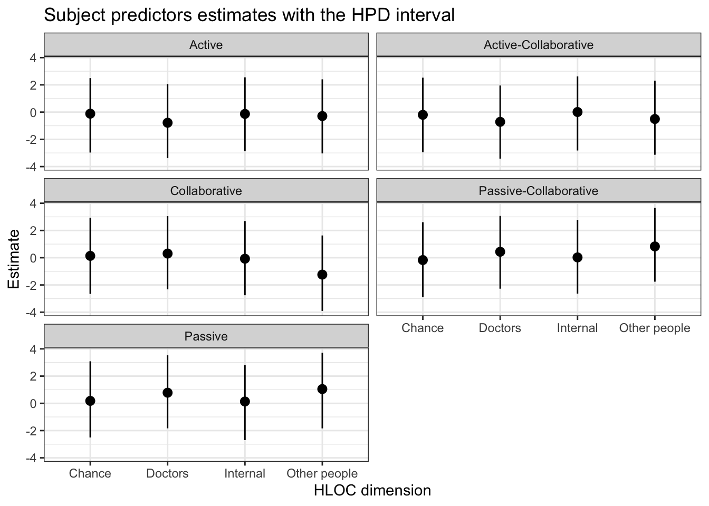
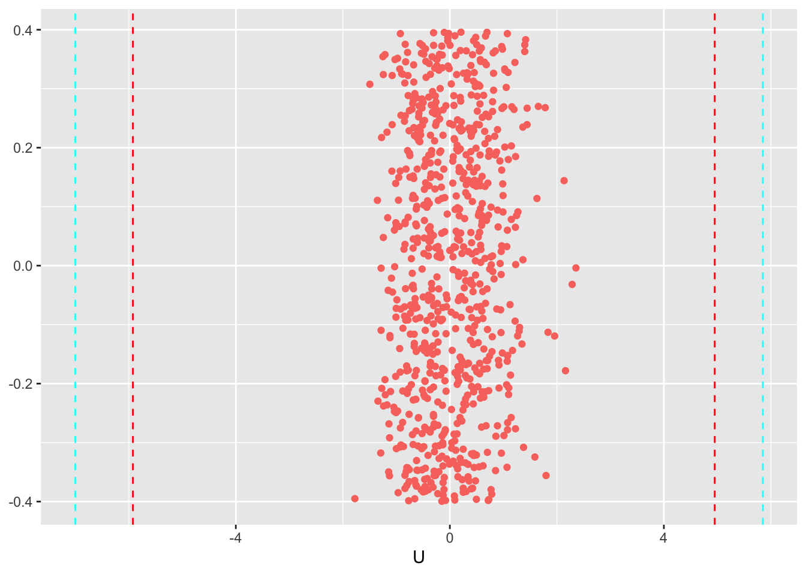
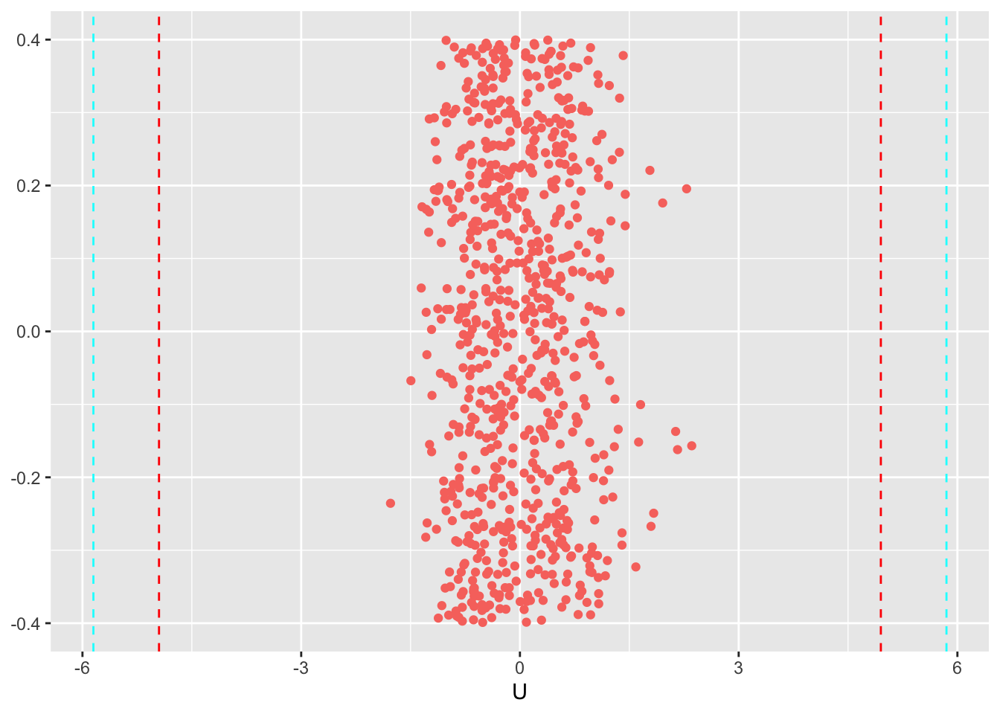

Chapter 5 Re-analysis 3
This re-analysis is from the study
Marton, Giulia, et al. “Patients’ health locus of control and preferences about the role that they want to play in the medical decision-making process.” Psychology, Health & Medicine (2020): 1-7
library(bpcs)
library(tidyverse)
library(knitr)
library(loo)
library(cmdstanr)
PATH_TO_CMDSTAN <- paste(Sys.getenv("HOME"), '/.cmdstan/cmdstan-2.27.0', sep = '')
set_cmdstan_path(PATH_TO_CMDSTAN)
set.seed(99)5.1 Importing the data
The data from this paper was made available upon request and below we exemplify a few rows of how the original dataset looks like. Let’s starting importing the data.
d<-read.table("data/MHLC.txt", sep="\t", header=T)
d<-as.data.frame(d)
sample_n(d, size=5) %>%
kable(caption = 'Sample of rows from the original data') %>%
kableExtra::kable_styling(bootstrap_options = c("striped", "hover", "condensed", "responsive")) %>%
kableExtra::scroll_box(width = "100%")| AB | AC | BC | AD | BD | CD | AE | BE | CE | DE | GENDER | MHLC_INTERNAL | MHLC_CHANCE | MHLC_DOCTORS | MHLC_OTHER_PEOPLE | Age |
|---|---|---|---|---|---|---|---|---|---|---|---|---|---|---|---|
| 1 | 1 | 1 | 1 | 1 | 1 | 1 | 1 | 1 | 1 | 2 | 16 | 14 | 12 | 10 | 56 |
| 1 | 1 | 1 | 1 | 1 | 0 | 0 | 0 | 0 | 0 | 2 | 23 | 13 | 14 | 7 | 53 |
| 1 | 1 | 1 | 0 | 0 | 0 | 0 | 0 | 0 | 0 | 1 | 19 | 6 | 9 | 5 | 58 |
| 1 | 1 | 1 | 1 | 1 | 0 | 1 | 0 | 0 | 0 | 2 | 19 | 7 | 7 | 8 | 27 |
| 1 | 1 | 1 | 1 | 0 | 0 | 0 | 0 | 0 | 0 | 1 | 14 | 12 | 11 | 5 | 28 |
As we can see, the data is in a wide format. Before we pivot it to longer let’s add a column that indicates the subject ID.
Now let’s pivot it to the longer format
cols_to_pivot<-colnames(d)[1:10]
d_longer<-tidyr::pivot_longer(d, cols=all_of(cols_to_pivot), names_to='comparison', values_to='y')Now let’s divide the comparison into two vectors (choice0 and choice1). So it fits the bpcs format
comp_cols <- str_split_fixed(d_longer$comparison, "", 2)
d_longer$choice0 <- comp_cols[,1]
d_longer$choice1 <- comp_cols[,2]The data frame now looks like this:
dplyr::sample_n(d_longer, size=10) %>%
kable() %>%
kableExtra::kable_styling(bootstrap_options = c("striped", "hover", "condensed", "responsive")) %>%
kableExtra::scroll_box(width = "100%")| GENDER | MHLC_INTERNAL | MHLC_CHANCE | MHLC_DOCTORS | MHLC_OTHER_PEOPLE | Age | SubjectID | comparison | y | choice0 | choice1 |
|---|---|---|---|---|---|---|---|---|---|---|
| 1 | 22 | 6 | 15 | 14 | 31 | 96 | BE | 1 | B | E |
| 2 | 20 | 17 | 8 | 9 | 26 | 125 | DE | 0 | D | E |
| 2 | 30 | 30 | 15 | 15 | 27 | 116 | AC | 1 | A | C |
| 2 | 23 | 8 | 14 | 9 | 55 | 36 | BE | 1 | B | E |
| 2 | 23 | 18 | 13 | 11 | 53 | 42 | CD | 0 | C | D |
| 1 | 20 | 17 | 14 | 9 | 37 | 79 | AB | 1 | A | B |
| 2 | 21 | 23 | 13 | 11 | 78 | 2 | DE | 0 | D | E |
| 2 | 20 | 23 | 8 | 13 | 30 | 100 | CD | 1 | C | D |
| 2 | 19 | 19 | 17 | 9 | 34 | 93 | AE | 1 | A | E |
| 2 | 33 | 31 | 8 | 13 | 45 | 58 | DE | 1 | D | E |
Now that we have setup the data frame correctly for the bpcs package, we can use it to model the problem.
Let’s just rename a few values so it is easier to understand.
#choice0
d_longer$choice0 <- recode(d_longer$choice0, 'A'='Active')
d_longer$choice0 <- recode(d_longer$choice0, 'B'='Active-Collaborative')
d_longer$choice0 <- recode(d_longer$choice0, 'C'='Collaborative')
d_longer$choice0 <- recode(d_longer$choice0, 'D'='Passive-Collaborative')
d_longer$choice0 <- recode(d_longer$choice0, 'E'='Passive')
#choice1
d_longer$choice1 <- recode(d_longer$choice1, 'A'='Active')
d_longer$choice1 <- recode(d_longer$choice1, 'B'='Active-Collaborative')
d_longer$choice1 <- recode(d_longer$choice1, 'C'='Collaborative')
d_longer$choice1 <- recode(d_longer$choice1, 'D'='Passive-Collaborative')
d_longer$choice1 <- recode(d_longer$choice1, 'E'='Passive')Our final step in the preparation of the dataset is to standardize the values of the MHLOC scales. The values provided in the dataset correspond to the sum of the values of the scale and ranges from 3-18 or from 6-36. Therefore we will scale them accordingly for more stable inference
d_longer <- d_longer %>%
mutate(Internal = scale(MHLC_INTERNAL),
Chance = scale(MHLC_CHANCE),
Doctors = scale(MHLC_DOCTORS),
OtherPeople = scale(MHLC_OTHER_PEOPLE))The final modified dataset looks like:
sample_n(d_longer, size=10) %>%
kable() %>%
kableExtra::kable_styling(bootstrap_options = c("striped", "hover", "condensed", "responsive")) %>%
kableExtra::scroll_box(width = "100%")| GENDER | MHLC_INTERNAL | MHLC_CHANCE | MHLC_DOCTORS | MHLC_OTHER_PEOPLE | Age | SubjectID | comparison | y | choice0 | choice1 | Internal | Chance | Doctors | OtherPeople |
|---|---|---|---|---|---|---|---|---|---|---|---|---|---|---|
| 2 | 18 | 11 | 9 | 7 | 57 | 27 | BD | 1 | Active-Collaborative | Passive-Collaborative | -0.4347094 | -0.61218263 | -0.76052743 | -0.4611581 |
| 1 | 18 | 31 | 15 | 8 | 44 | 60 | DE | 0 | Passive-Collaborative | Passive | -0.4347094 | 2.96961250 | 1.23422737 | -0.1135857 |
| 2 | 15 | 17 | 15 | 9 | 27 | 119 | AC | 1 | Active | Collaborative | -1.0563033 | 0.46235591 | 1.23422737 | 0.2339866 |
| 1 | 18 | 31 | 15 | 8 | 44 | 60 | BE | 0 | Active-Collaborative | Passive | -0.4347094 | 2.96961250 | 1.23422737 | -0.1135857 |
| 2 | 23 | 18 | 13 | 11 | 53 | 42 | CD | 0 | Collaborative | Passive-Collaborative | 0.6012804 | 0.64144566 | 0.56930911 | 0.9291313 |
| 1 | 21 | 13 | 11 | 7 | 53 | 40 | BE | 0 | Active-Collaborative | Passive | 0.1868844 | -0.25400312 | -0.09560916 | -0.4611581 |
| 2 | 25 | 14 | 14 | 10 | 61 | 14 | AC | 1 | Active | Collaborative | 1.0156763 | -0.07491336 | 0.90176824 | 0.5815589 |
| 2 | 30 | 14 | 10 | 9 | 63 | 8 | BE | 0 | Active-Collaborative | Passive | 2.0516661 | -0.07491336 | -0.42806830 | 0.2339866 |
| 2 | 15 | 15 | 12 | 8 | 36 | 87 | BD | 1 | Active-Collaborative | Passive-Collaborative | -1.0563033 | 0.10417639 | 0.23684997 | -0.1135857 |
| 1 | 15 | 14 | 9 | 6 | NA | 1 | AE | 0 | Active | Passive | -1.0563033 | -0.07491336 | -0.76052743 | -0.8087304 |
Now we can proceed with the analysis.
5.2 Simple Bradley-Terry models
Let’s start with a simple BT without considering any subject predictors. Just to evaluate the average probability of people being Active, Active-Collaborative, Collaborative, Passive-Collaborative or Passive.
m1 <-
bpc(
d_longer,
player0 = 'choice0',
player1 = 'choice1',
result_column = 'y',
model_type = 'bt',
priors = list(prior_lambda_std = 3.0),
iter = 2000,
show_chain_messages = T
)
save_bpc_model(m1, 'm_hloc', './fittedmodels')Let’s investigate model convergence with shinystan and with check convergence function. Everything seems fine.
Now let’s get the waic
##
## Computed from 8000 by 1530 log-likelihood matrix
##
## Estimate SE
## elpd_waic -711.2 22.2
## p_waic 4.0 0.2
## waic 1422.5 44.55.3 Subject predictors model
We have different HLC that can be used as predictors for the response. Let’s create a single model with all the predictors.
m2 <-
bpc(
d_longer,
player0 = 'choice0',
player1 = 'choice1',
result_column = 'y',
subject_predictors = c('Internal', 'Chance', 'Doctors', 'OtherPeople'),
model_type = 'bt-subjectpredictors',
priors = list(prior_lambda_std = 3.0,
prior_S_std = 3.0),
iter = 2000,
show_chain_messages = T
)
save_bpc_model(m2, 'm_mhloc_subjectpred', './fittedmodels')Diagnostics:
##
## Computed from 8000 by 1530 log-likelihood matrix
##
## Estimate SE
## elpd_waic -689.3 23.2
## p_waic 20.8 1.1
## waic 1378.7 46.35.4 Subject predictors and random effects
Now let’s create a third model that also compensate for multiple judgment with a random effects variable.
This model adds 153*4 variables, so sampling will take longer and be a bit more complex.
m3 <-
bpc(
d_longer,
player0 = 'choice0',
player1 = 'choice1',
result_column = 'y',
subject_predictors = c('Internal', 'Chance', 'Doctors', 'OtherPeople'),
cluster = c('SubjectID'),
model_type = 'bt-subjectpredictors-U',
priors = list(prior_lambda_std = 3.0,
prior_S_std = 3.0,
prior_U1_std = 3.0),
iter = 2000,
show_chain_messages = T
)
save_bpc_model(m3, 'm_mhloc_subjectpred_U', './fittedmodels')Diagnostics
For a quick check
## Processing csv files: /Users/xramor/OneDrive/2021/bpcs-online-appendix/.bpcs/bt-202109131951-1-11fb34.csv, /Users/xramor/OneDrive/2021/bpcs-online-appendix/.bpcs/bt-202109131951-2-11fb34.csv, /Users/xramor/OneDrive/2021/bpcs-online-appendix/.bpcs/bt-202109131951-3-11fb34.csv, /Users/xramor/OneDrive/2021/bpcs-online-appendix/.bpcs/bt-202109131951-4-11fb34.csv
##
## Checking sampler transitions treedepth.
## Treedepth satisfactory for all transitions.
##
## Checking sampler transitions for divergences.
## No divergent transitions found.
##
## Checking E-BFMI - sampler transitions HMC potential energy.
## E-BFMI satisfactory.
##
## Effective sample size satisfactory.
##
## Split R-hat values satisfactory all parameters.
##
## Processing complete, no problems detected.##
## Computed from 8000 by 1530 log-likelihood matrix
##
## Estimate SE
## elpd_waic -399.8 17.7
## p_waic 223.6 10.8
## waic 799.5 35.4
##
## 164 (10.7%) p_waic estimates greater than 0.4. We recommend trying loo instead.5.5 Comparing the WAIC
Let’s compare the WAIC of the three models
## elpd_diff se_diff
## model3 0.0 0.0
## model2 -289.6 17.7
## model1 -311.5 18.65.6 Plots and tables
Now that we see that all models have proper convergence and that the model m3 has a better fit we will generate some plots and tables to help understand the problem
lambda <- get_parameters(m3, params = 'lambda', n_eff = T,keep_par_name = F)
Spar <- get_parameters(m3, params = 'S', n_eff = T)
U_std <- get_parameters(m3, params = 'U1_std', n_eff = T)Let’s create a custom table based on these parameters. But first we will rename the parameters a bit so the table reads a bit better. We are here removing the S[*] from the parameter
5.6.1 Table lambda and U
Now we can create the table
#merge the datasets
df_table <- rbind(lambda, U_std)
rownames(df_table)<- NULL
#creating the table
df_table %>%
kable(caption = 'Lambda parameters of the model and the random effects standard deviation',
digits = 2,
col.names = c('Parameter', 'Mean','Median','HPD lower', 'HPD lower','N. Eff. Samples')) %>%
kableExtra::kable_styling(bootstrap_options = c("striped", "hover", "condensed", "responsive")) %>%
kableExtra::scroll_box(width = "100%")| Parameter | Mean | Median | HPD lower | HPD lower | N. Eff. Samples |
|---|---|---|---|---|---|
| Active | -3.17 | -3.18 | -5.99 | -0.39 | 2474 |
| Active-Collaborative | 2.11 | 2.12 | -0.60 | 4.75 | 2729 |
| Collaborative | 4.92 | 4.93 | 2.02 | 7.79 | 2653 |
| Passive-Collaborative | 1.25 | 1.25 | -1.48 | 3.85 | 2693 |
| Passive | -5.11 | -5.09 | -8.21 | -2.24 | 2432 |
| U1_std | 3.63 | 3.59 | 2.67 | 4.56 | 2003 |
5.6.2 Subject predictors table
S <- Spar %>% tidyr::separate(Parameter,c('Role','MHLOC'), sep=",")
S$MHLOC <- recode(S$MHLOC, 'OtherPeople'= 'Other people')
rownames(S) <- NULLS %>%
dplyr::arrange(Role) %>%
select(-Role) %>%
kable(format='html',
caption = 'Subject predictors parameters by role',
digits = 2,
col.names = c('Parameter', 'Mean', 'Median','HPD lower', 'HPD lower', 'N. Eff. Samples'),
booktabs=T) %>%
kableExtra::kable_styling(bootstrap_options = c("striped", "hover", "condensed", "responsive")) %>%
kableExtra::pack_rows("Active", 1, 4) %>%
kableExtra::pack_rows("Active-Collaborative", 5, 8) %>%
kableExtra::pack_rows("Collaborative", 9, 12) %>%
kableExtra::pack_rows("Passive-Collaborative", 13, 16) %>%
kableExtra::pack_rows("Passive", 17, 20) %>%
kableExtra::scroll_box(width = "100%")| Parameter | Mean | Median | HPD lower | HPD lower | N. Eff. Samples |
|---|---|---|---|---|---|
| Active | |||||
| Internal | -0.13 | -0.13 | -2.87 | 2.55 | 3176 |
| Chance | -0.12 | -0.12 | -2.97 | 2.50 | 2454 |
| Doctors | -0.78 | -0.77 | -3.38 | 2.05 | 3015 |
| Other people | -0.29 | -0.28 | -3.03 | 2.41 | 3019 |
| Active-Collaborative | |||||
| Internal | 0.01 | 0.00 | -2.82 | 2.62 | 3180 |
| Chance | -0.20 | -0.21 | -2.95 | 2.53 | 2501 |
| Doctors | -0.71 | -0.73 | -3.42 | 1.95 | 2944 |
| Other people | -0.51 | -0.49 | -3.13 | 2.31 | 3011 |
| Collaborative | |||||
| Internal | -0.07 | -0.07 | -2.75 | 2.69 | 3196 |
| Chance | 0.14 | 0.13 | -2.66 | 2.94 | 2617 |
| Doctors | 0.31 | 0.30 | -2.32 | 3.05 | 2995 |
| Other people | -1.24 | -1.23 | -3.91 | 1.63 | 2974 |
| Passive-Collaborative | |||||
| Internal | 0.13 | 0.12 | -2.70 | 2.79 | 3232 |
| Chance | 0.18 | 0.17 | -2.51 | 3.09 | 2476 |
| Doctors | 0.78 | 0.78 | -1.84 | 3.53 | 3084 |
| Other people | 1.05 | 1.04 | -1.84 | 3.71 | 3001 |
| Passive | |||||
| Internal | 0.02 | 0.03 | -2.64 | 2.78 | 3173 |
| Chance | -0.17 | -0.17 | -2.87 | 2.61 | 2516 |
| Doctors | 0.44 | 0.44 | -2.27 | 3.07 | 3074 |
| Other people | 0.83 | 0.82 | -1.76 | 3.66 | 2951 |
5.6.3 Plot
S$Role <- factor(S$Role, levels = c('Active', 'Active-Collaborative', 'Collaborative', 'Passive-Collaborative', 'Passive'))
ggplot(S, aes(x=MHLOC))+
geom_pointrange(aes(
ymin = HPD_lower,
ymax = HPD_higher,
y = Mean,
group=MHLOC))+
facet_wrap(~Role, nrow = 3) + #Dividing the plot into three by species
labs(title = 'Subject predictors estimates with the HPD interval',
y = 'Estimate',
x = 'HLOC dimension')+
theme_bw()+ # A black and white theme
# scale_x_discrete(guide = guide_axis(n.dodge = 2)) +
theme(legend.position="bottom") #small adjustments to the theme
5.6.4 Probability tables
First let’s create a data frame with the cases we want to investigate. We will utilize the model_type option in the probabilities table so we can average out the values of the random effects in the subjects. In this table, we will only investigate a few of the conditions, but of course it is possible to do a much more expansive analysis
Let’s create a new data frame with the conditions we want to investigate. Mainly we are just investigating: * Between the choice of Active and Passive how does going from -2 to 2 standard deviations over the mean influences the probability in the Internal and the Doctors * Between the choice of Active-Collaborative and Collaborative how does going from -2 to 2 standard deviations over the mean influences the probability in the Internal and the Doctors * Between the choice of Collaborative and Passive-Collaborative how does going from -2 to 2 standard deviations over the mean influences the probability in the Internal and the Doctors
newdata <- tibble::tribble(~choice1, ~choice0, ~Internal, ~Chance, ~Doctors, ~OtherPeople,
"Active", "Passive", 0, 0, 0, 0,
"Active", "Passive", -2, 0, 0, 0,
"Active", "Passive", 2, 0, 0, 0,
"Active", "Passive", 0, 0, -2, 0,
"Active", "Passive", 0, 0, 2, 0,
"Active-Collaborative", "Collaborative", 0, 0, 0, 0,
"Active-Collaborative", "Collaborative", -2, 0, 0, 0,
"Active-Collaborative", "Collaborative", 2, 0, 0, 0,
"Active-Collaborative", "Collaborative", 0, 0, -2, 0,
"Active-Collaborative", "Collaborative", 0, 0, 2, 0,
"Collaborative", "Passive-Collaborative", 0, 0, 0, 0,
"Collaborative", "Passive-Collaborative", 0, -2, 0, 0,
"Collaborative", "Passive-Collaborative", 0, 2, 0, 0,
"Collaborative", "Passive-Collaborative", 0, 0, 0, -2,
"Collaborative", "Passive-Collaborative", 0, 0, 0, 2
)
#Now we can calculate the probabilities
prob_hloc <-
get_probabilities_df(
m3,
newdata = newdata,
model_type = 'bt-subjectpredictors') #here we are assuming zero for the random effectsprob_hloc %>%
select(-j_beats_i) %>%
rename(Probability=i_beats_j) %>%
kable(caption = "Probabilities of selecting role i instead of j based on changes of the values of the HLOC dimensions",
digits = 2,
booktabs = T) %>%
kableExtra::kable_styling(bootstrap_options = c("striped", "hover", "condensed", "responsive")) %>%
kableExtra::add_header_above(c("Roles" = 2, "HLOC dimensions" = 4, " "=1)) %>%
kableExtra::scroll_box(width = "100%")| i | j | Internal | Chance | Doctors | OtherPeople | Probability |
|---|---|---|---|---|---|---|
| Active | Passive | 0 | 0 | 0 | 0 | 0.87 |
| Active | Passive | -2 | 0 | 0 | 0 | 0.89 |
| Active | Passive | 2 | 0 | 0 | 0 | 0.86 |
| Active | Passive | 0 | 0 | -2 | 0 | 0.84 |
| Active | Passive | 0 | 0 | 2 | 0 | 0.88 |
| Active-Collaborative | Collaborative | 0 | 0 | 0 | 0 | 0.07 |
| Active-Collaborative | Collaborative | -2 | 0 | 0 | 0 | 0.07 |
| Active-Collaborative | Collaborative | 2 | 0 | 0 | 0 | 0.07 |
| Active-Collaborative | Collaborative | 0 | 0 | -2 | 0 | 0.04 |
| Active-Collaborative | Collaborative | 0 | 0 | 2 | 0 | 0.07 |
| Collaborative | Passive-Collaborative | 0 | 0 | 0 | 0 | 0.98 |
| Collaborative | Passive-Collaborative | 0 | -2 | 0 | 0 | 0.97 |
| Collaborative | Passive-Collaborative | 0 | 2 | 0 | 0 | 0.98 |
| Collaborative | Passive-Collaborative | 0 | 0 | 0 | -2 | 0.96 |
| Collaborative | Passive-Collaborative | 0 | 0 | 0 | 2 | 0.95 |
5.7 Assessing fitness of items and judges
For simplification we will be using only the median (and not the full posterior) to assess the fitness of judges
std_judges <- U_std$Median #variance of the judges
U <- get_parameters(m3, params = 'U1', n_eff = T)
U_median <- U$Median
U_median <- U_median[-length(U_median)]
U_fit <- data.frame(U=U_median, y=rep(0,length(U_median)), q90=as.factor(as.numeric(U_median > std_judges*1.65)), q95=as.factor(as.numeric(U_median > std_judges*1.96)))
ggplot(data=U_fit, aes(x=U, y=y, color=q90))+
geom_jitter() +
geom_vline(xintercept = c(-1.65*std_judges,1.65*3), linetype = "dashed", color="red")+
geom_vline(xintercept = c(-1.95*std_judges,1.95*3), linetype = "dashed", color="cyan")+
theme(legend.position="none", axis.title.y = element_blank()) #small adjustments to the theme
From this figure we can see that none of the judges rated a value outside the 90% and the 95% interval
Comparing to the prior distribution (with std of 3.0)
ggplot(data=U_fit, aes(x=U, y=y, color=q90))+
geom_jitter() +
geom_vline(xintercept = c(-1.65*3,1.65*3), linetype = "dashed", color="red")+
geom_vline(xintercept = c(-1.95*3,1.95*3), linetype = "dashed", color="cyan")+
theme(legend.position="none", axis.title.y = element_blank()) #small adjustments to the theme
Finally we can look also if any of the judges can be considered to be outliers
Let’s use a Hample filter on the median values
lower_bound <- median(U_median) - 3 * mad(U_median, constant = 1)
upper_bound <- median(U_median) + 3 * mad(U_median, constant = 1)
which(U_median< lower_bound | U_median > upper_bound)## [1] 50 165 260 398 410 480 560 565 570 574 610 685Within the values we have a few pairs of judges/items to be consider outliers, although without a misfit in terms of model